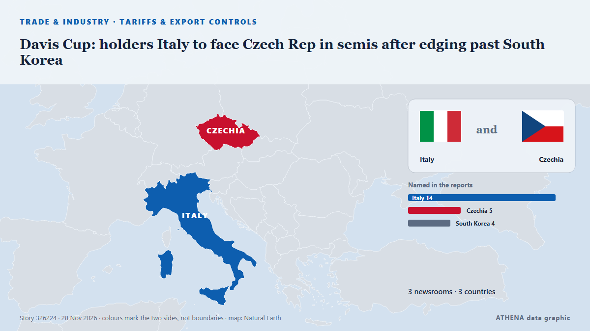

Δασμοί & έλεγχοι εξαγωγών
ΧορηγούμενοΠαρουσιάζεται από  Cybernetics and Artificial Intelligence Lab Welcome to the Cybernetics and Artificial Intelligence Laboratory, established at the Department of Business Administration of the National and Kapodistrian University of Athens. The lab is headed by Professor Dimitrios Thomakos. The lab aims to do research that can be published in top venues. Our research uses tools and methods of Artificial Intelligence, and lies in the following areas: - Forecasting - Decision making - Cyber security - Finance We are always looking forward to collaborating with exceptional students!
Cybernetics and Artificial Intelligence Lab Welcome to the Cybernetics and Artificial Intelligence Laboratory, established at the Department of Business Administration of the National and Kapodistrian University of Athens. The lab is headed by Professor Dimitrios Thomakos. The lab aims to do research that can be published in top venues. Our research uses tools and methods of Artificial Intelligence, and lies in the following areas: - Forecasting - Decision making - Cyber security - Finance We are always looking forward to collaborating with exceptional students!
| 15 Νοε | 0 |
|---|---|
| 16 Νοε | 0 |
| 17 Νοε | 1 |
| 18 Νοε | 0 |
| 19 Νοε | 0 |
| 20 Νοε | 0 |
| 21 Νοε | 0 |
| 22 Νοε | 0 |
| 23 Νοε | 1 |
| 24 Νοε | 1 |
| 25 Νοε | 7 |
| 26 Νοε | 8 |
| 27 Νοε | 2 |
| 28 Νοε | 0 |
Οι τίτλοι των ειδήσεων παρουσιάζονται στα αγγλικά, όπως δημοσιεύτηκαν.

Davis Cup: holders Italy to face Czech Rep in semis after edging past South Korea
(ANSA) - ROME, 26 NOV - Holders Italy will face the Czech Republic in the Davis Cup semi-finals after edging past South Korea 2-1 in the last four in Bologna on Wednesday. από ANSA English
South Africa’s last manganese smelter warns of imminent retrenchments
Transalloys says NERSA's silence is draining its cash, and it will start retrenchments within two weeks without a decision. από IOL
US unveils tariffs on EU, China and others over ‘unfair’ trade
The United States has proposed tariffs of up to 20% on the European Union, China, and several other countries, citing unfair economic practices following a lengthy investigation. από Arab News
EU rejects new US tariffs targeting industrial overcapacity
The European Union has rejected the rationale behind new tariffs proposed by the United States on several trading partners, to fight what Washington describes as excess industrial capacity, and said… από RFI English
RI pushes export diversification amid proposed 18 percent US tariffs
Indonesia is intensifying efforts to diversify its export markets in response to a United States proposal to impose new ... από Antara (English)
Swedish minister slams Trump's trade policy over fresh tariff threat
The Trump administration is about to launch new tariffs of 15 percent on goods from EU countries. από The Local Sweden
'No structural excess capacity in any sector': India pushes back against US tariff allegations
India said on Wednesday that it remained committed to concluding a bilateral trade agreement with the US at the earliest. από Business Today India
Trump’s new tariffs aim to pry global trade from China’s grip
The United States’ latest tariff hikes are set to inflame trade tension with Beijing, making it… από BusinessWorld
Explained: How Trump’s proposed tariffs for India compare with rival nations
The United States has proposed a 25 percent tariff on Indian imports to address what it describes as excess industrial capacity. από The Kathmandu Post
Vietnam seeks talks to lower proposed US tariffs under Section 301 investigation
Vietnam will pursue multiple channels of engagement and negotiations with the U.S. to reduce an additional tariff of up to 35 percent proposed by the Office of the U.S. από Tuoi Tre News
US Proposes 25% Tariff On India. It Could Come Down With Trade Deal
These new tariffs would not be added to existing ones aimed at combating forced labour or certain sector-specific tariffs, a senior US official said. από NDTV
US proposes surprise new tariffs on Brazil imports, including 10% duty on aircraft
Brazil’s government said Washington’s proposal was unacceptable and aimed to pressure Brazil into changing its regulatory measures. από The Straits Times
US announces fresh tariffs on China and several other trading partners
WASHINGTON DC: The United States has unveiled a new round of import tariffs targeting several countries and trading partners as President Donald Trump continues to advance his signature trade policy. από Khabarhub English